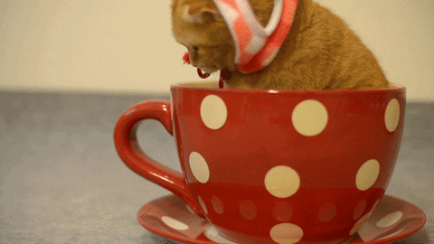
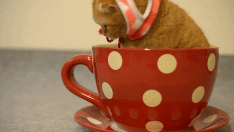
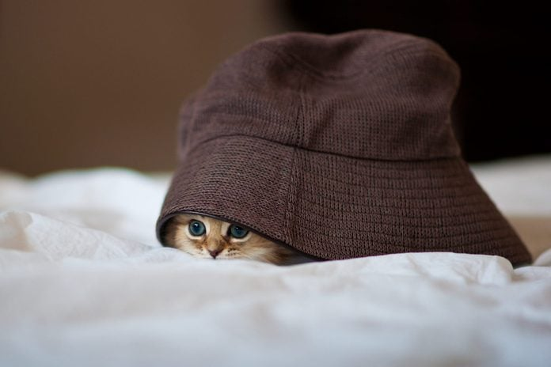
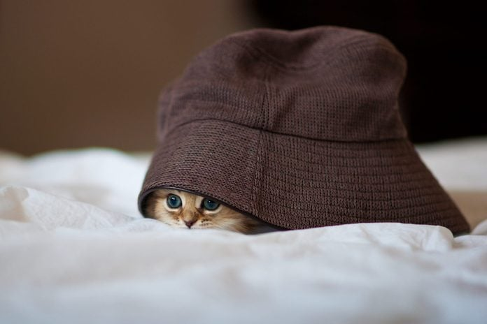
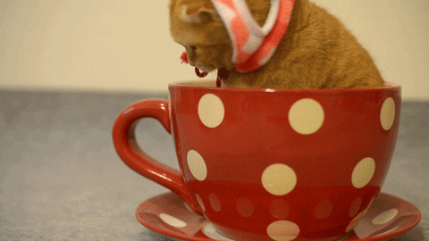
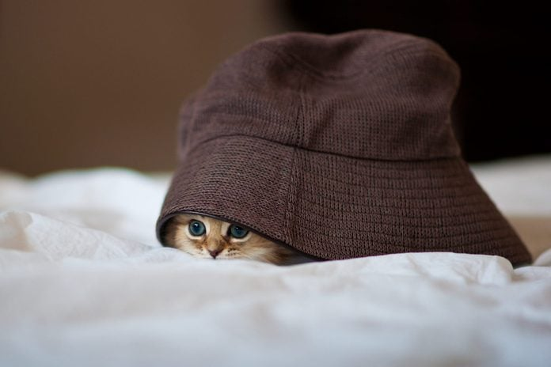

Cat Gallery
Behold, some of our favorite cat images—each one guaranteed to brighten your day!

 

 


Cats are the epitome of grace, independence, and comedic chaos. One second, they’re plotting murder and ignoring you with disdain; the next, they’re purring up a storm and demanding their full food bowl be more full. We’re Affan & Keanu, cat lover extraordinaires who've harnessed the power of Azure App Services to bring you this cat-tastic site—because what’s better than celebrating cats in the cloud? (The answer is horses, gel pens, or nothing!)
So, whether you're a midnight zoomie champion, a regal fluffball, or a smelly cat, we’re here to applaud every meow, hiss, and head tilt on this site deployed using Azure App Services. Feel free to RDP, VPN, or log in and embrace the glorious silliness that is catdom— Now streaming proudly from Azure!
Behold, some of our favorite cat images—each one guaranteed to brighten your day!


Answer these meow-tastic questions to discover your inner cat!
Can’t get enough cat content? Check out these meow-rific sites for even more feline fun:
From gaming to cat-bouncing silliness, these links will keep your inner cat lover entertained!
If you are interested in seeing our other Project Sites feel free to follow the links below!